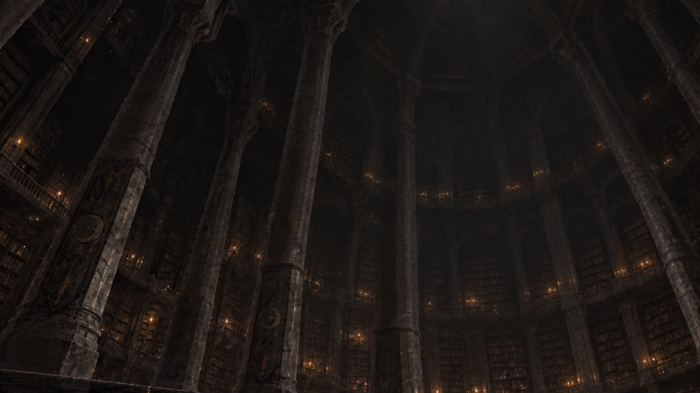
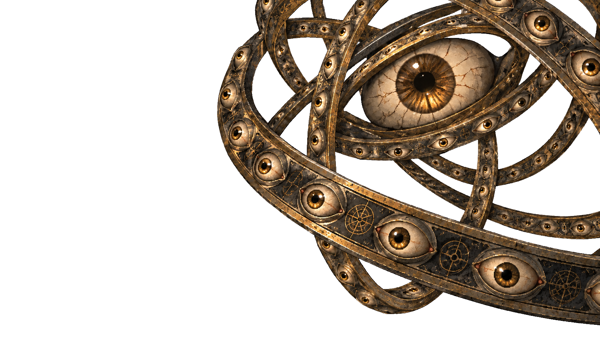

<!doctype html>
<html lang="ko">
<meta charset="utf-8">
<meta name="viewport" content="width=device-width,initial-scale=1">
<title>서고 · 전투 레이어 미리보기</title>
<style>
*{box-sizing:border-box}body{margin:0;background:#101316;color:#ddd4c5;font:16px system-ui,sans-serif;min-height:100vh;display:grid;place-content:center;padding:24px}main{width:min(1200px,94vw)}h1{font-size:20px;font-weight:500}.scene{position:relative;aspect-ratio:1672/941;overflow:hidden;background:#171c21}.scene img{position:absolute;inset:0;width:100%;height:100%;object-fit:fill}.entity{animation:float 8s ease-in-out infinite;transform:scale(1.025)}@keyframes float{0%,100%{transform:translateY(-.5%) scale(1.025)}50%{transform:translateY(.5%) scale(1.025)}}.paused .entity{animation-play-state:paused}button{margin-top:16px;padding:10px 18px;background:#262d32;color:inherit;border:1px solid #69716e;border-radius:4px;cursor:pointer}p{font-size:14px;color:#a4aaa8}@media(prefers-reduced-motion:reduce){.entity{animation:none}}
</style>
<main><h1>서고 · 그것과의 조우</h1><div class="scene" id="scene"></div><button id="pause" aria-pressed="false">움직임 멈추기</button><p>배경은 고정되어 있고, 투명 배경의 ‘그것’만 천천히 위아래로 움직입니다.</p></main>
<script>const scene=document.getElementById('scene'),button=document.getElementById('pause');if(matchMedia('(prefers-reduced-motion: reduce)').matches){button.hidden=true}button.addEventListener('click',()=>{const paused=scene.classList.toggle('paused');button.setAttribute('aria-pressed',String(paused));button.textContent=paused?'움직임 재생':'움직임 멈추기'});</script>
</html>
